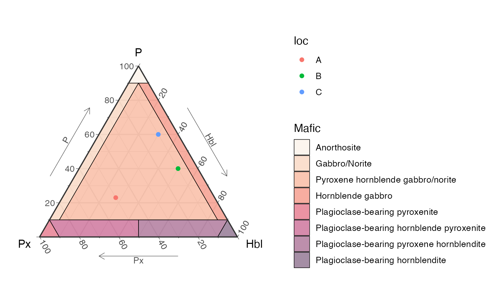

QAP Ternary Diagram for Mafic Rocks (horneblende)
Source:R/ternary_qap_m_hbl.R
ternary_qap_m_hbl.Rdternary_qap_m_hbl() draws either a static or interactive ternary diagram, in english or spanish. It is a base diagram where data can be plotted.
Details
For plotting data on the ggplot object it would be easier if the names of the dataframe are "px", "p", and "hbl", that way it gets mapped automatically, if not make sure to use "aes(x=px,y=p,z=hbl)".
For plotting on the plotly object the mapping of the new data should be as shown in the example: a = ~p, b = ~px, c = ~hbl, where a refers to the top ("p"), b refers to the bottom left ("px"), and c refers to the bottom right ("hbl").
The examples show basic usage and how to add data, which can be more customizable.
For a more complete description on how to use this function and similar ones, see
vignette("classification_diagrams_vig")
See also
Other classification plots, petrology:
TAS(),
ternary_afm(),
ternary_dickinson_qmflt(),
ternary_dickinson_qtfl(),
ternary_fap(),
ternary_feldspars(),
ternary_folk_gsm(),
ternary_folk_qfl(),
ternary_folk_qfm(),
ternary_folk_smc(),
ternary_pyroclastic_size(),
ternary_pyroclastic_type(),
ternary_qap(),
ternary_qap_g(),
ternary_qap_m_ol(),
ternary_qap_um(),
ternary_qap_um_hbl()
Examples
library(ggplot2)
library(plotly)
d = data.frame(p=c(23,40,60),
hbl=c(27,50,30),
px=c(50,10,10),
loc=c("A", "B", "C"))
# adding data to ggplot object
ternary_qap_m_hbl() + geom_point(aes(col = loc), data = d)
#> Ignoring unknown labels:
#> • T : "P"
#> • L : "Px"
#> • R : "Hbl"

# adding data to plotly object
ternary_qap_m_hbl('plotly') %>%
add_trace(a = ~p, b = ~px, c = ~hbl,
data = d,
name = 'My data',
type = "scatterternary",
mode = "markers",
marker = list(size=8,color='cyan',
symbol=3,opacity=.9),
hovertemplate = paste0('P: %{a}<br>',
'Px: %{b}<br>',
'Hbl: %{c}'))
# customizing colors and symbols by location
my_pal <- c("A" = "red", "B" = "blue", "C" = "green")
my_shapes <- c("A" = "circle", "B" = "square", "C" = "diamond")
ternary_qap_m_hbl('plotly') %>%
add_trace(a = ~p, b = ~px, c = ~hbl,
data = d,
type = "scatterternary",
mode = "markers",
split = ~loc,
marker = list(size=8,
color = ~my_pal[loc],
symbol = ~my_shapes[loc],
opacity=.9),
hovertemplate = paste0('P: %{a}<br>',
'Px: %{b}<br>',
'Hbl: %{c}'))